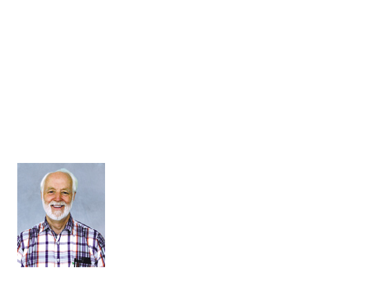

A Simple Compiler in MATLAB
by Bill McKeeman
Updated December 28, 2005
A Simple Compiler in M
Contents
Generalities
Complicated input (such as C or M or XML) is usually best processed using grammar-based tools and algorithms. The result is a fairly regular and maintainable input program and also an internal representation of the input upon which to base subsequent processing. The prototypical example is translating a programming language (such as M) into an executable form (such as pcode or hardware opcodes).
The following code was first presented in the 10-lecture in-house compiler course at MathWorks in 2000.
Grammar
Compilers are always designed around a grammar describing the input language. Here is the grammar for the simple compiler. It describes a sequence of assignment statements. The assignments may contain arithmetic operators, parentheses, variables and numbers.
rule numbers program stmts 1 stmts stmt 1 stmts stmt 2 stmt assign ; 1 assign var = expr 1 var id 1 expr term 1 expr + term 2 expr - term 3 term factor 1 term * factor 2 term / factor 3 term \ factor 4 factor ( expr ) 1 var 2 int 3
Front End
The input is traditionally separated into two phases, lexical analysis and parsing. The lexer analyzes the word and punctuation structure. Significant items, called tokens, are sent to the parser. Other items, such as white space and comments, are discarded.
The parser applies grammar rules and produces a so-called shift-reduce sequence. This comes about as tokens are pushed onto the parser stack (called shifts) and, when the top of the stack contains the the right-hand-side of a grammar rule, the rhs is replaced with the name of the grammar rule (called a reduction). When the input has all been consumed and when parse stack contains the just grammar goal symbol, the parse succeeds.
Except for the discarded lexical information, no information has been lost. That is, the input can be recreated from the shift-reduce sequence.
There are two competing ways of implementing parsers (called bottom-up and top-down). This presentation is about top-down parsers.
Lexer
The two front end components can be tested separately. Function lexer.m is called by lexer_test. The input is an arbitrary test text.
lexer_test
lexing a b1 Cc d_1 0 12 12c ()*/\+-=;
a token code: 2
b1 token code: 2
Cc token code: 2
d_1 token code: 2
0 token code: 3
12 token code: 3
12 token code: 3
c token code: 2
( token code: 4
) token code: 5
* token code: 6
/ token code: 7
\ token code: 8
+ token code: 9
- token code: 10
= token code: 11
; token code: 12
token code: 1
The lexer code itself is
dbtype lexer
1 % FILE: lexer.m
2 % PURPOSE: Simple lexer
3 % CALL: [tcode, tstart, tend] = lexer(src)
4 % SIG: [[uint8], [uint16], [uint16]] = lexer([char])
5 % Accepts M-like source text and produces three arrays
6 % tcode(i) is a unique code for the i-th token.
7 % src(tstart(i):tend(i)) is the text of the i-th token.
8
9 function [tcode, tstart, tend] = lexer(src)
10
11 % Initialize character and token tables.
12 TOK = enum(tokens);
13
14 EOF = uint8(128);
15 isdigit(1:EOF) = false; isdigit('0':'9') = true;
16 isalnum = isdigit; isalnum('a':'z') = true; isalnum('A':'Z') = true;
17
18 ch2code(EOF) = 0; % allocate fast table
19 ch2code('=') = TOK.eq; % for single char tokens
20 ch2code('+') = TOK.add;
21 ch2code('-') = TOK.sub;
22 ch2code('*') = TOK.mul;
23 ch2code('/') = TOK.div;
24 ch2code('\') = TOK.vid;
25 ch2code('(') = TOK.lp;
26 ch2code(')') = TOK.rp;
27 ch2code(';') = TOK.semi;
28
29 % Allocate storage for the token sequences
30 len = uint16(length(src)); % more than enough
31 tcode = zeros(len,1, 'uint8'); % preallocate
32 tstart = zeros(len,1, 'uint16');
33 tend = zeros(len,1, 'uint16');
34
35 ti = uint16(0); % token index
36 ci = uint16(1); % character index
37 src = [src EOF]; % append eof
38
39 % Lex the input
40 while true
41 st = ci;
42 ch = src(ci);
43
44 if ch<1 | ch>EOF
45 error(['unexpected input character ' num2str(ch)]);
46 elseif isspace(ch) % blank
47 ci = ci+1;
48 continue; % ignore whitespace
49 elseif isletter(ch)
50 while isalnum(ch) || ch == '_' % identifier
51 ci = ci+1;
52 ch = src(ci);
53 end
54 tok = TOK.id;
55 elseif isdigit(ch) % number
56 while isdigit(ch)
57 ci = ci+1;
58 ch = src(ci);
59 end
60 tok = TOK.int;
61 elseif ch2code(ch) ~= 0 % single char tokens
62 ci = ci+1;
63 tok = ch2code(ch);
64 elseif ch == EOF % eof
65 tok = TOK.eof;
66 else
67 error(['unexpected input character ''' ch '''']);
68 end
69
70 if ti == numel(tcode) % need more storage
71 tcode(end+end) = 0; % double it
72 tstart(end+end) = 0;
73 tend(end+end) = 0;
74 end
75 ti = ti+1; % make room
76 tcode(ti) = tok; % record token info
77 tstart(ti) = st;
78 tend(ti) = ci-1; % ci starts next token
79 if tok == TOK.eof, break; end % quit
80 end
81
82 % Clean up
83 tcode = tcode(1:ti); % trim results
84 tstart = tstart(1:ti);
85 tend = tend(1:ti);
86
Helper Functions
The lexer depends on two simple helper functions that insure that the lexer and parser use the same tables.
dbtype tokens dbtype enum
1 % FILE: tokens.m
2 % PURPOSE: List of token names for simple lexer
3
4 function names = tokens
5 names = {
6 'eof', ...
7 'id', ... xyz
8 'int', ... 123
9 'lp', ... (
10 'rp', ... )
11 'mul', ... *
12 'div', ... /
13 'vid', ... \
14 'add', ... +
15 'sub', ... -
16 'eq', ... =
17 'semi' ... ;
18 };
1 % FILE: enum.m
2 % PURPOSE: Implement M version of enum
3 % METHOD: Fill struct with names for 1:n
4 % USAGE: >> E = enum({'a', 'b', ...});
5 % >> if E.a == ...
6
7 function res = enum(names)
8 res = struct;
9 for i =1:numel(names)
10 res.(names{i}) = uint8(i); % only 255 of them
11 end
enum(tokens)
ans =
eof: 1
id: 2
int: 3
lp: 4
rp: 5
mul: 6
div: 7
vid: 8
add: 9
sub: 10
eq: 11
semi: 12
Parser
Function parser.m is called by parser_test. In this case the input is syntactically correct. The parser calls the lexer for each token.
parser_test
parsing a=1000; b=(a+((1))); longid=1+2-3*4/5\6;
a=1000; b=(a+((1))); longid=1+2-3*4/5\6;
shift 'a'
rule 7
shift '='
shift '1000'
rule 17
rule 11
rule 8
shift ';'
rule 6
rule 5
rule 3
shift 'b'
rule 7
shift '='
shift '('
shift 'a'
rule 7
rule 16
rule 11
rule 8
shift '+'
shift '('
shift '('
shift '1'
rule 17
rule 11
rule 8
shift ')'
rule 15
rule 11
rule 8
shift ')'
rule 15
rule 11
rule 9
shift ')'
rule 15
rule 11
rule 8
shift ';'
rule 6
rule 5
rule 4
shift 'longid'
rule 7
shift '='
shift '1'
rule 17
rule 11
rule 8
shift '+'
shift '2'
rule 17
rule 11
rule 9
shift '-'
shift '3'
rule 17
rule 11
shift '*'
shift '4'
rule 17
rule 12
shift '/'
shift '5'
rule 17
rule 13
shift '\'
shift '6'
rule 17
rule 14
rule 10
shift ';'
rule 6
rule 5
rule 4
rule 2
The parser code relies on the ability to nest functions in M. The recursive parse routines must share state. GLOBAL could be used but the local variables of the parser are a much more elegant solution, thanks to Mike Karr.
dbtype parser
1 % FILE: parser.m
2 % PURPOSE: Example recursive M subset parser in M
3 % METHOD: Recursive descent
4 %
5 % GRAMMAR: M subset
6 % rule numbers
7 % program
8 % stmts 1
9 % stmts
10 % stmt 1
11 % stmts stmt 2
12 % stmt
13 % assign ; 1
14 % assign
15 % var = expr 1
16 % var
17 % id 1
18 % expr
19 % term 1
20 % expr + term 2
21 % expr - term 3
22 % term
23 % factor 1
24 % term * factor 2
25 % term / factor 3
26 % term \ factor 4
27 % factor
28 % ( expr ) 1
29 % var 2
30 % int 3
31
32 function sr = parser(tc)
33 % sr: shift-reduce sequence
34 % tc: token code sequence
35
36 % Establish nested variables
37 TOK = enum(tokens); % enumerations
38 RULE = enum(rules);
39 toki = uint16(1); % token index
40 sr = ones(100,1,'uint8'); % preallocate sr sequence
41 sri = uint16(0); % sr index
42
43 program; % parse input (this is IT)
44
45 sr = sr(1:sri); % trim exactly
46
47
48 % ----------- nested recursive function definitions ----------------
49
50 function program % program
51 stmts;
52 reduce(RULE.program1);
53 end
54
55 function stmts % stmts
56 stmt;
57 reduce(RULE.stmts1);
58 while tc(toki) ~= TOK.eof
59 stmt;
60 reduce(RULE.stmts2);
61 end
62 end
63
64 function stmt % stmt
65 assign;
66 reduce(RULE.stmt1);
67 end
68
69 function assign % assign
70 var;
71 if tc(toki) == TOK.eq
72 shift; % discard =
73 expr;
74 else
75 parseerror('expected =, ', tc(toki));
76 end
77 if tc(toki) == TOK.semi
78 shift; % discard ;
79 else
80 parseerror('expected ;, ', tc(toki));
81 end
82 reduce(RULE.assign1);
83 end
84
85 function var % var
86 if tc(toki) == TOK.id
87 shift; % record id
88 reduce(RULE.var1);
89 else
90 parseerror('expected var, ', tc(toki));
91 end
92 end
93
94 function expr % expr
95 term;
96 reduce(RULE.expr1);
97 u = tc(toki);
98 while u == TOK.add || u == TOK.sub
99 shift; % discard + or -
100 r = RULE.expr2; % usual case
101 if u == TOK.sub, r = RULE.expr3; end
102 term;
103 reduce(r);
104 u = tc(toki);
105 end
106 end
107
108 function term % term
109 factor;
110 reduce(RULE.term1);
111 t = tc(toki);
112 while t == TOK.mul || t == TOK.div || t == TOK.vid
113 shift; % discard * / \
114 r = RULE.term2; % usual case
115 if t == TOK.div, r = RULE.term3; end
116 if t == TOK.vid, r = RULE.term4; end
117 factor;
118 reduce(r);
119 t = tc(toki);
120 end
121 end
122
123 function factor % factor
124 w = tc(toki);
125 if w == TOK.lp
126 shift; % discard (
127 expr;
128 if tc(toki) == TOK.rp
129 shift; % discard )
130 else
131 parseerror('expected ), ', tc(toki));
132 end
133 reduce(RULE.factor1);
134 elseif w == TOK.id
135 var;
136 reduce(RULE.factor2);
137 elseif w == TOK.int
138 shift; % record int
139 reduce(RULE.factor3);
140 else
141 parseerror('unexpected token, ', w);
142 end
143 end
144
145 function shift % shift
146 appd(RULE.shift); % special shift marker
147 appd(toki); % index of token
148 toki = toki+1; % discard token
149 end
150
151 function reduce(rule) % reduce
152 appd(rule);
153 end
154
155 function appd(data) % append to sr sequence
156 if sri >= length(sr)
157 sr(end+end) = 0; % double allocation
158 end
159 sri = sri+1; % make room
160 sr(sri) = data; % place data
161 end
162
163 function parseerror(msg, found)
164 disp('***Parse error, sr sequence:');
165 rulenames = rules;
166 tokennames = tokens;
167 i = 1;
168 while true % dump sr sequence so far
169 if i >= sri, break; end
170 t = sr(i);
171 if t == RULE.shift % special shift marker
172 i = i+1; % move to token index
173 disp([' shift ' tokennames{tc(sr(i))}]);
174 else
175 disp([' reduce ' rulenames{t}]);
176 end
177 i = i+1;
178 end
179
180 error([msg 'found ' tokennames{found}]);
181 end
182
183 end % of parse
184
More Helper Functions
Like the lexer, the parser needs a helper function to pass information on to the next stage.
dbtype rules
1 % FILE: rules.m
2 % PURPOSE: Rule names for simple parser
3
4 function names = rules
5 names = { ...
6 'shift', ...
7 'program1', 'stmts1', 'stmts2', ...
8 'stmt1', 'assign1', 'var1', ...
9 'expr1', 'expr2', 'expr3', ...
10 'term1', 'term2', 'term3', 'term4', ...
11 'factor1', 'factor2', 'factor3'};
enum(rules)
ans =
shift: 1
program1: 2
stmts1: 3
stmts2: 4
stmt1: 5
assign1: 6
var1: 7
expr1: 8
expr2: 9
expr3: 10
term1: 11
term2: 12
term3: 13
term4: 14
factor1: 15
factor2: 16
factor3: 17
Back End
It is somewhat surprising that the shift/reduce sequence contains the Reverse Polish (pcode) sequence. It is a byproduct of the way grammars are written (left to right association). The generator depends on this, merely needing to extract the sequence and reformat as Intel assembly. The unit test for the generator gives the following outout.
gen_test
a=1000; b=(a+((1))); longid=1+2-3*4/5\6; ENTRY: fld =1000 fstp a fld a fld =1 fadd fstp b fld =1 fld =2 fadd fld =3 fld =4 fmul fld =5 fdiv fld =6 fdivr fsub fstp longid
Here is the generator.
dbtype gen
1 % FILE: gen.m
2 % PURPOSE: Sample x86 code generator for type double
3 % CALL: asm = gen(src, ts, te, sr)
4 % SIG: [char] = gen([char], [uint16], [uint16], [uint16]))
5 % Accepts source text, token markers and shift/reduce sequence
6 % Produces assembly level x86 code
7 % USAGE: See gen_test.m for example of use
8
9 function asm = gen(src, tc, ts, te, sr)
10
11 TOK = enum(tokens); % enumerations
12 RULE = enum(rules);
13
14 sri = uint16(1); % shift/reduce index
15 symi = uint16(0); % symbol stack index
16 EOL = 10; % ASCII newline character
17 asm = ['ENTRY:' EOL]; % the assembly language
18
19 while(true)
20 switch sr(sri) % rule number
21 case RULE.shift
22 sri = sri+1; % move to token val
23 t = tc(sr(sri)); % token code
24 if t == TOK.id || t == TOK.int % significant?
25 symi = symi+1;
26 syms(symi) = sr(sri); % stack token
27 end
28
29 case RULE.program1 % quit
30 break;
31
32 case RULE.stmts1
33 case RULE.stmts2
34 case RULE.stmt1
35
36 case RULE.assign1 % x=exp;
37 v = syms(symi);
38 symi = symi-1;
39 asm = [asm ' fstp ' src(ts(v):te(v)) EOL];
40 case RULE.var1
41
42 case RULE.expr1
43
44 case RULE.expr2 % a+b
45 asm = [asm ' fadd' EOL];
46 case RULE.expr3 % a-b
47 asm = [asm ' fsub' EOL];
48 case RULE.term1
49
50 case RULE.term2 % a*b
51 asm = [asm ' fmul' EOL];
52 case RULE.term3 % a/b
53 asm = [asm ' fdiv' EOL];
54 case RULE.term4 % a\b
55 asm = [asm ' fdivr' EOL];
56 case RULE.factor1
57
58 case RULE.factor2 % abc
59 v = syms(symi);
60 symi = symi-1;
61 asm = [asm ' fld ' src(ts(v):te(v)) EOL];
62 case RULE.factor3 % 123
63 v = syms(symi);
64 symi = symi-1;
65 asm = [asm ' fld =' src(ts(v):te(v)) EOL];
66 otherwise
67 error('unknown rule');
68 end
69 sri = sri + 1; % next shift/reduce
70 end
71
Bottom Line
That's all folks. You could grab these three modules and their helpers and write your own translator today.
bill = imread('bill.jpg'); image(bill); set(gca, 'outerposition', [0,0,.3,.5]) axis equal; axis off